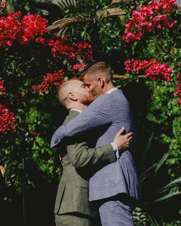

Mais casamentos... ♡
Camila & Klebber
O casal se casou em Jericoacoara, no Ceará numa cerimônia religiosa com familiares e amigos. Os dois casaram com
pé na areia e a noiva usou uma joia de tornozelo feita especialmente para a ocasião. O noivo entrou ao som de You
Are sou Beautiful e Camila com La Vie en Rose!
Alok & Romana
Os noivos tiveram seu casamento aos pés do Cristo Redentor em uma cerimônia com convidados exclusivos às 5h da manha. Os dois optaram por usar branco e não apenas a noiva, e com isso destacou ainda mais o cenário do nascer do sol!
Aila & Mia
A cantora Aila e a influencer Mia tiveram sua celebração no outono da Toscana, na Itália. Na celebração, as duas utilizaram vestido branco e acessórios como flores na cabeça o que combinou ainda mais com o cenário rústico do local.

Colin & Liam
Os noivos Colin e Liam casaram de supresa e tiveram uma cerimônia exclusiva apenas para os dois na Pousada Union Hill em Sonora, Califórnia onde celebraram a sua união ao som de Perfect, do Ed Sheeran.
Joe & Sophie
Os artista e cantor Joe Jonas e a atriz, estrela de "Game of Thrones", Sophie Turner, se casaram pela segunda vez em um castelo do século 18 no sul da França, após de terem realizado uma cerimônia em Las Vegas.
Marina & Alexandre
O casal que atualmente ja comemora 2 anos de casados, teve sua celebração no início de 2018 em Campinas, interior de São Paulo. A atriz entrou de braço dado com o pai, Paulo Ruy Barbosa, usando um vestido Dolce & Gabbana.
Os estilistas italianos fizeram o vestido exclusivamente para ela.
 Facebook: /annabelleweddings lllLLLLLLllllllllll
Facebook: /annabelleweddings lllLLLLLLllllllllll
 Instagram: @annabelleweddings
Instagram: @annabelleweddings